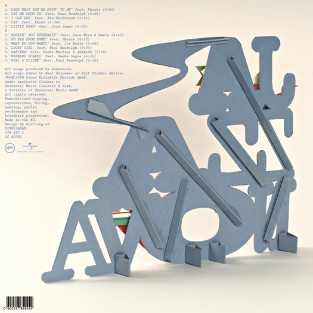

- Jazzanova
- Rumquis nonsedi cusae. Minulla turiam quis adit expliciae volorion post omnis ipsam faccuptae net fugit latiusam, consequis vero officium essequid eni
- Booka Shade
- Tickle Video
- Booka Shade
- Neon
- Nike
- Lebron James Shoe Drop
- Nike
- Lebron James
- Nike
- Lebron James

- Workshop Dessau
- Eike’s workshop philiosophy is to facilitate students ideation in all directions.

- Workshop Dortmund
- Sillyness and play are indicative of the output of Hort and integral approaches within workshops.